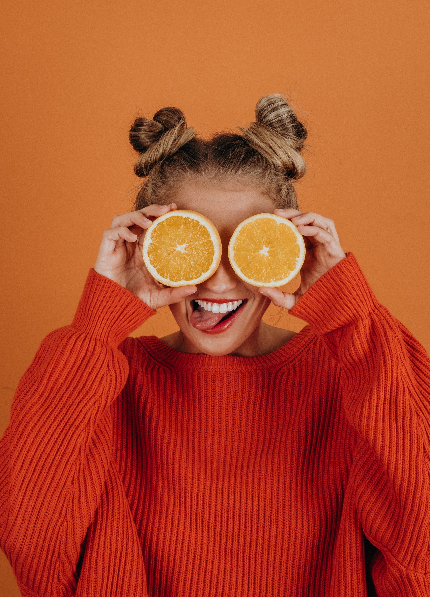

Student Profiles
Ruòxī

Ruòxī is a boisterous student who likes to get stuck in with practical work. She’s worked on: * Electric cars * Robotic arms * Sports training systems
Priya
Priya loves working with people and visual systems. Shes worked on: * Facial recognition software * Self-driving systems * Animal classification apps
Aniyah
Aniyah is a mathematician through-and-through. She’s worked on: * Algorithm classification * Prime number factorisation * Computer graphics
Lucy
Lucy loves data and getting everything organised. She’s worked on: * Course choice prediction systems * Student information systems * Long-term extracurricular trends
Kaiara

Kaiara is a driven entrepreneur and drives app development forward. She’s worked on: * Ecommerce systems * Payment handling software * Stock management apps